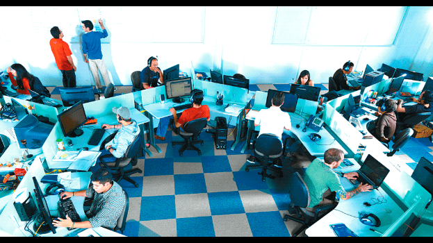

Acerca de Nosotros
La Fundación Jala fue creada el año 2008; con el objetivo de formar recursos humanos para la industria de software de la región.
Para lograr este objetivo trabajamos en:
-
1. Mejorar la calidad de la formación de ingenieros de software de calidad internacional.
-
2. Transformar la educación memorística en una por razonamiento.
Nuestro trabajo se extiende en un amplio rango de edades, desde jóvenes colegiales en tercero de secundaria a jóvenes profesionales que hayan terminado sus carreras universitarias.
Sobre la educación que impartimos
En esta institución, la educación es el cimiento para transformar nuestro país a través de la tecnología y lograr una Industria del Software emergente desde el corazón de Bolivia. En esta década de trabajo nuestros laboratorios han recibido a más de 1000 universitarios y profesionales que actualmente se desempeñan laboralmente en empresas de software en la región.
La entidad tiene dos programas; el primero es Desarrollo de Software y el segundo Control de Calidad. En ambos, la Fundación Jala tiene a 120 jóvenes. Además, sus programas de enseñanza se ampliaron hasta llegar a los colegios abarcando a alrededor de 8.000 estudiantes.
La primera área
Está dedicado al “Desarrollo del Software" para personas que están concluyendo carreras informáticas o ramas afines como ingeniería electrónica, telecomunicaciones.
La segunda área
Está dedicado al “Control de calidad de Software"donde las personas podrán analizar y observar resultados útiles para reconocer riesgos, escribir reportes de bichos siguiendo procesos adecuados de control de calidad.

NUESTRO ENFOQUE Y VALORES
Para formar los recursos humanos nos basamos en mejorar la calidad de la formación de ingenieros de software y transformar la educación memorística en una por razonamiento
PROGRAMAS DE FORMACIÓN
Te ayudamos a desarrollar habilidades técnicas y sociales para desarrollar una carrera profesional a nivel internacional.
PROYECTOS
El Proyecto JaqueMate inició sus actividades desde el año 2015 con el objetivo de promover el desarrollo de la lógica y razonamiento en los jóvenes.
Al igual que el proyecto Girl Power for Technology que nace el 4 de abril del 2017 como una iniciativa para las mujeres que se iniciaran y formarán cómo ingenieras de Jalasoft.
